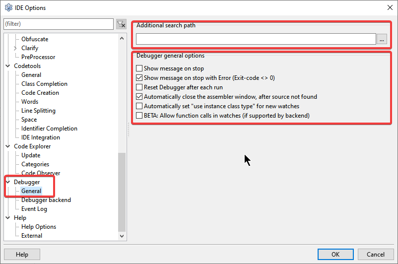
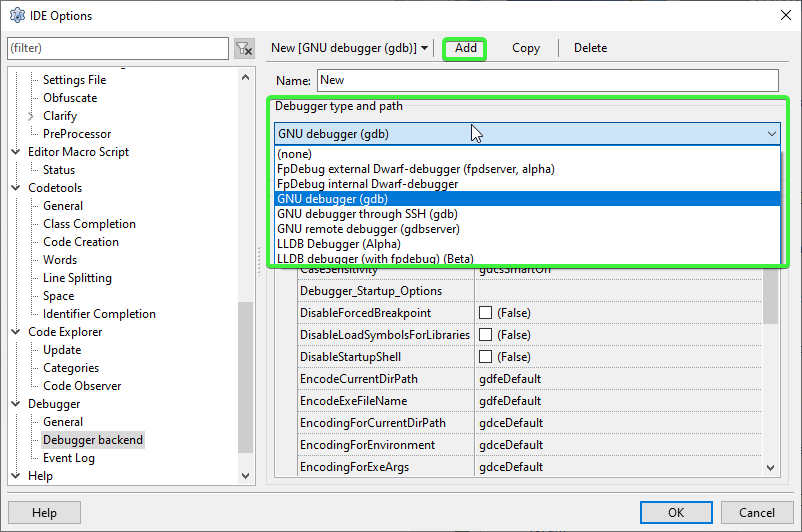

Trocando o fpDebug para o velho e conhecido GDB
Este artigo orienta a troca do fpDebug, o debugger padrão atual do Lazarus, pelo veterano GDB (GNU Debugger).
Vale lembrar que o GDB foi substituído como padrão porque o fpDebug foi criado especificamente para depurar programas em Free Pascal, sendo mais leve e integrado. O GDB é um componente multiuso para diversas linguagens, o que o torna um pouco mais pesado e, por vezes, lento. No entanto, em situações de erros inesperados ou para validar o comportamento do próprio fpDebug, voltar ao GDB pode ser necessário.
Passo 1: Verificando a presença do GDB
Antes de configurar a IDE, certifique-se de que o GDB está instalado no seu sistema. No Windows, ele geralmente acompanha a instalação do Lazarus (na pasta mingw). No Linux, você pode instalá-lo via terminal:
sudo apt install gdbPasso 2: Configurando o Caminho do Executável
Acesse o menu Tools -> Options -> Debugger -> General. No campo "Debugger executable" (ou em versões mais antigas, no caminho de busca), aponte para o local do executável do GDB.
- Windows: Geralmente em
C:\lazarus\mingw\bin\gdb.exe - Linux: Geralmente em
/usr/bin/gdb

Passo 3: Alterando o Backend de Depuração
Agora, vá em Tools -> Options -> Debugger -> Debugger Backend.
Clique no botão Add e selecione a opção GNU debugger (GDB). Após adicionar, certifique-se de que ele está selecionado como o backend ativo na lista de depuradores.

Por que voltar ao GDB?
Embora o fpDebug seja o futuro, o GDB ainda possui vantagens em cenários específicos:
- Estabilidade: Por ser um projeto de décadas, é extremamente estável.
- Suporte Remoto: O GDB é excelente para depuração remota através do
gdbserver. - Multi-linguagem: Se o seu projeto Lazarus faz chamadas a bibliotecas C/C++ externas, o GDB pode lidar melhor com a transição entre as linguagens durante a depuração.
Após realizar essas trocas, reinicie o Lazarus e tente rodar seu projeto em modo Debug (F9) para garantir que a IDE está comunicando-se corretamente com o novo motor escolhido.